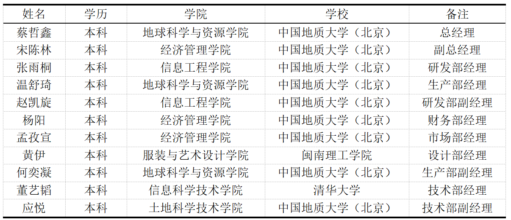

联系我们，共谋发展
Contact us and seek common development
乡村振兴策略：详细介绍项目提出的乡村振兴策略，包括产业融合、人才培养、文化传承等方面。

项目团队介绍：展示项目团队的成员介绍、专业背景及合作经验。
蔡哲鑫：总经理
中国地质大学（北京）地球科学与资源学院2021级本科生，地质学专业，负责统筹公司技术迭代与运营管理。在教师指导下以研究人员身份参与了“教师科普能力提升交流活动”、“自然文化服务乡村振兴战略路径的探讨”、“代代薪火相传--北地校园特色文化资源应用研究”及“白云岩刀砍状构造形成机制研究”项目，以负责人身份进行了“3D 打印技术赋能地学科普方式创新实践探索”项目的研究。2023年9月18日-21日在海南博鳌参加中国地质学会2023年学术年会，并于9月20日在年会第37分会场（主题为“新时代地学科普理论与实践”）作了题为“3D 打印技术赋能自然资源科普方式创新实践探索”的报告，所投稿论文摘要已收录至年会摘要集。
宋陈林：副总经理
中国地质大学（北京）经济管理学院2022级本科生，工商管理专业。她善于规划项目的各个阶段，并通过有效的协作与沟通确保团队工作的高效性和协调性。曾多次作为负责人参加“挑战杯”中国大学生创业计划大赛等各类创业项目，熟悉企业运营流程。
张雨桐：研发部经理
中国地质大学（北京）信息工程学院2022级本科生，在项目中负责网站的编写工作。作为一名信息工程学院的学生，他具备扎实的编程技能和网站开发经验。他将运用自己的专业知识和技能，根据本团队的需求，设计和开发一个功能完善、易于使用的网站，以展示项目的信息和成果。
赵凯旋：研发部副经理
中国地质大学（北京）信息工程学院2022级本科生，在项目中负责网站的编写工作。她熟练掌握多种编程语言和开发工具，具备良好的逻辑思维能力和创造性的设计能力。她将充分运用自己的技术和经验，与团队密切合作，确保网站的设计和功能符合项目的需求，并提供良好的用户体验。
温舒琦：生产部经理
中国地质大学（北京）地球科学与资源学院2021级本科生，在项目中负责对项目地质内容进行把关和修改。他具备深厚的地质学知识和丰富的实践经验。他将运用自己的专业知识，仔细审查和修改项目中的地质内容，确保其准确性和科学性。
何奕凝：生产部副经理
中国地质大学（北京）地球科学与资源学院2021级本科生，在项目中负责对项目地质内容进行把关和修改。她具备扎实的地质学知识和研究经验。通过发挥自己的专业优势，为本项目提供地质学方面的支持和指导。同时，她将与团队密切合作，准确把握地质公园的特征和价值，为项目的规划和实施提供科学依据，推动项目取得成功。
杨阳：财务部经理
中国地质大学（北京）经济管理学院2022级本科生，负责项目的实施计划，以及对项目的价值与风险进行评估和判断。她将发挥自己的专业知识和管理技能，为项目的顺利实施提供重要支持。她将确保项目在整个执行过程中保持高效、有序，并及时应对可能出现的风险，以保障项目的成功完成和取得预期的成果。
孟孜宣：市场部经理
中国地质大学（北京）经济管理学院2022级本科生，负责项目的市场规划。她拥有优秀的市场分析能力和营销策划能力，能够根据市场情况和项目特点，制定切实可行的营销方案，并有效地推动项目在市场上的推广和宣传。她熟悉市场调研和市场推广的方法，能够有效地挖掘项目的市场潜力，提升项目的知名度和影响力。
黄伊：设计部经理
闽南理工学院服装与艺术设计学院2022级本科生，负责项目的艺术设计和美工工作。她擅长艺术设计和美工制作，具有独特的审美眼光和创意思维，能够根据项目的需求和主题，设计出具有吸引力和表现力的视觉作品，为项目注入活力和魅力。她将与团队密切合作，根据项目需求，精心设计和制作各类美工作品，为项目的宣传推广和形象建设做出贡献。
董艺韬：技术部经理
清华大学信息科学技术学院2023级本科生，负责项目的模型构建与数据处理工作。他具有扎实的计算机科学和技术功底，擅长模型构建和数据处理。同时，能够熟练掌握各种模型构建工具和数据处理软件，能够高效地完成复杂的模型设计和数据处理任务。
应悦：技术部副经理
中国地质大学（北京）土地科学技术学院2022级本科生，负责土地科学技术方面。他具有深厚的土地科学理论基础和实践经验，擅长土地利用规划和资源管理方面的工作。他能够熟练运用GIS等地理信息系统工具，对地质公园的土地资源进行分析和评估，为项目的规划和实施提供科学依据。联系方式：提供项目团队的电话、邮箱、地址等联系方式，方便游客和合作伙伴联系。
19105088591
1001210222@cugb.edu.cn
反馈与建议：鼓励游客和合作伙伴提供宝贵的反馈和建议，以促进项目的持续发展和完善。
当您访问我们的网站或与我们合作时，您的意见和建议对我们至关重要。我们真诚地鼓励您提供宝贵的反馈，以帮助我们不断改进和完善我们的项目。您的反馈不仅能够指引我们朝着正确的方向前进，还能够促进我们的持续发展。我们视每一位游客和合作伙伴的意见为宝贵财富，因此，我们欢迎您与我们分享您的想法和建议，共同推动项目取得更加辉煌的成就。